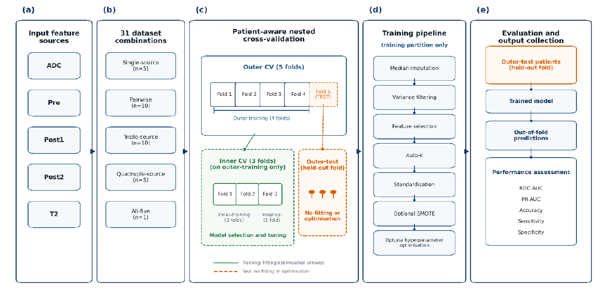
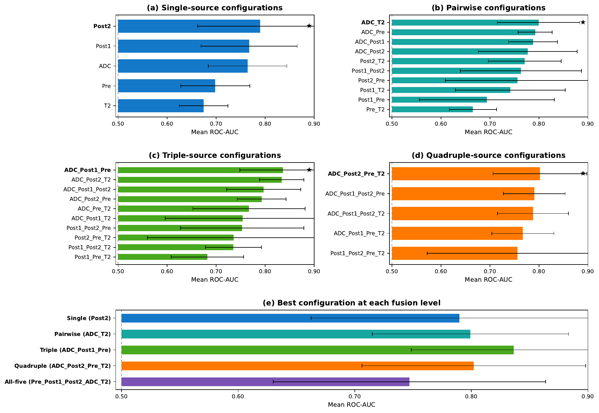
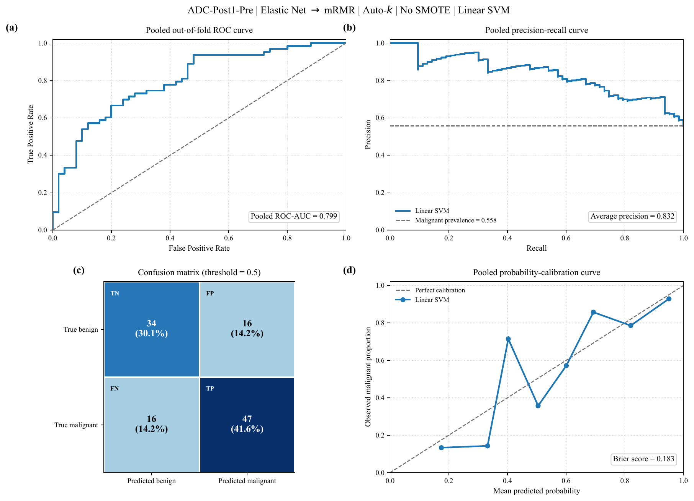
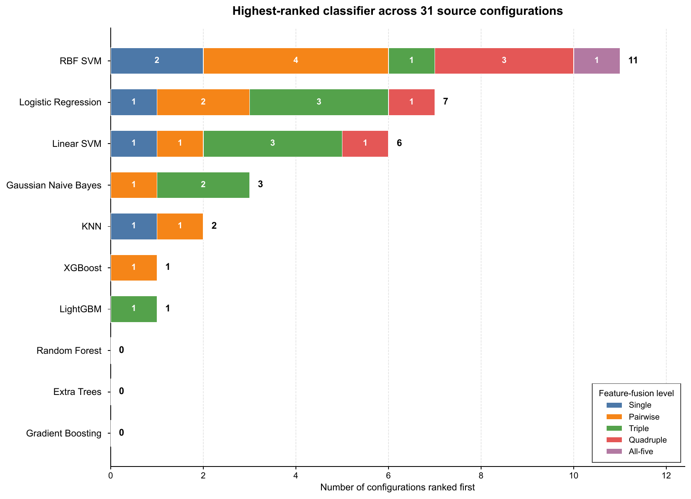
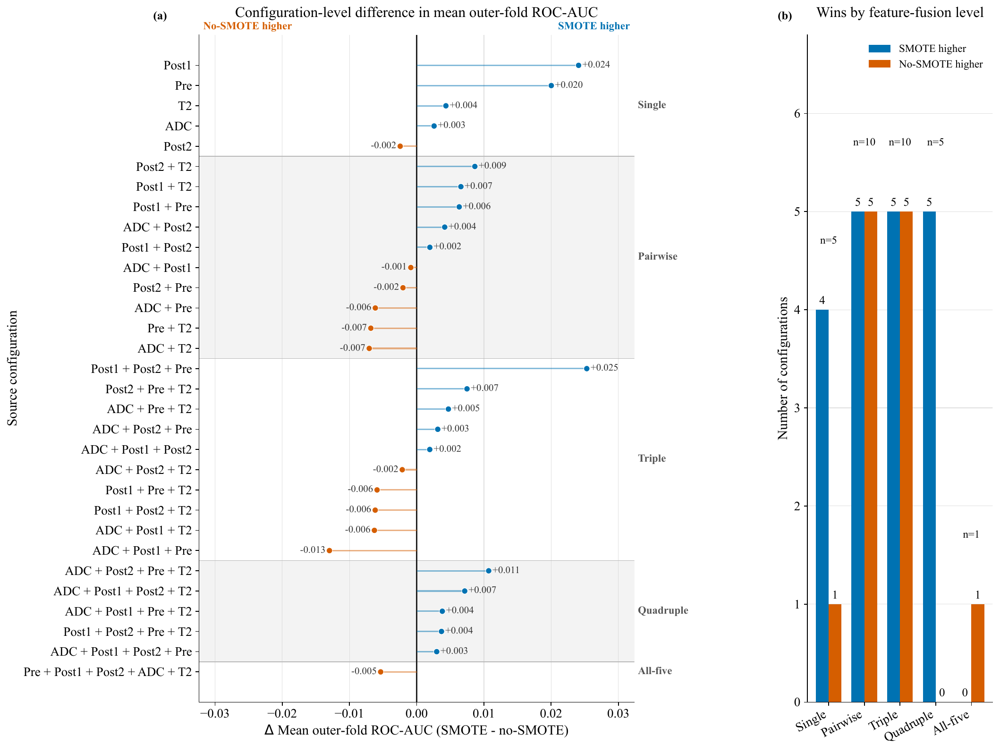
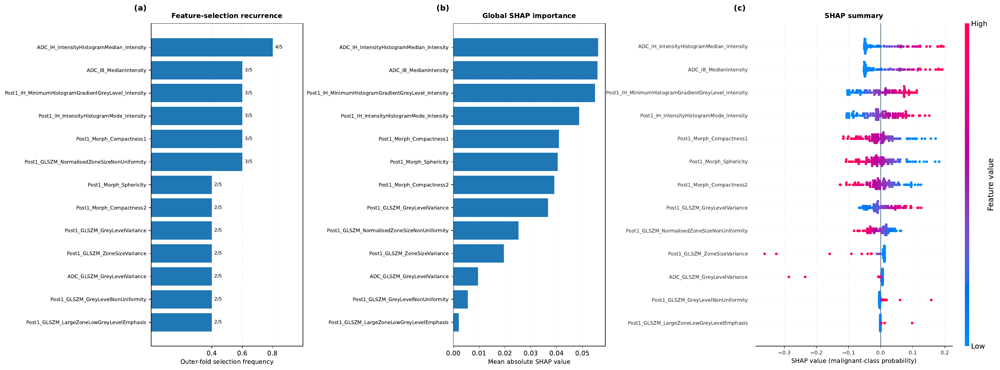

unique patients in the final computational datasets
Research project · 2026
Patient-Aware Explainable Machine Learning for Breast MRI Radiomics
A systematic evaluation of single- and multiparametric MRI radiomic feature fusion for preoperative classification of benign and malignant breast lesions, with strict patient-level validation and feature-level explainability.
31MRI source configurations
10ML classifiers
0.836Best mean ROC-AUC
Highest-ranked pipeline
ADC + Post1 + Pre
Mean outer-fold ROC-AUC0.836 ± 0.088
Pooled ROC-AUC0.799
Pooled PR-AUC0.832
Study at a glance
Selective fusion instead of “more is always better”
Five MRI-derived radiomic sources were evaluated individually and in every non-empty combination. The study asks whether complementary sources improve classification without allowing higher-dimensional feature spaces to overwhelm a relatively small patient cohort.
lesion ROIs in the reported single-source analysis
radiomic features extracted per MRI source
feature sources: ADC, Pre, Post1, Post2, and T2W
Study-count note. The manuscript abstract describes 49 patients in the retrospective study;
the computational Results section reports 48 unique patients in the radiomic datasets used for model analysis.
ADC
DCE-Pre
DCE-Post1
DCE-Post2
T2W
Methods
Patient-aware nested model development
Every data-dependent operation is confined to the relevant training partition. ROIs from the same patient are kept together throughout cross-validation to prevent patient-level leakage.

Feature sources
ADC, DCE-Pre, DCE-Post1, DCE-Post2, and T2W radiomic feature tables.
31 configurations
5 single-source, 10 pairwise, 10 triple-source, 5 quadruple-source, and 1 all-five dataset.
Nested validation
Five patient-aware outer folds for evaluation and three patient-aware inner folds for model development.
Feature selection
Correlation → mRMR, Elastic Net → mRMR, and mRMR → Elastic Net, with automatic feature-count optimization.
Class balancing
SMOTE is evaluated as an optional training-only condition after feature selection and standardization.
Optimization
Ten classifiers with classifier-specific hyperparameters optimized using Optuna/TPE in the inner loop.
Technical details
Feature redundancy|Pearson r| > 0.90
Missing valuesTraining-derived median imputation
Primary metricMean outer-fold ROC-AUC
Classification threshold0.5
Uncertainty2,000 patient-cluster bootstrap resamples
SoftwarePython 3.13.9
Results
The best model used three sources, not all five
The highest-ranked pipeline used ADC, Post1, and Pre features. Complete five-source fusion produced lower discrimination, supporting selective integration of complementary MRI information.
0.836± 0.088
Mean outer-fold ROC-AUC
ADC + Post1 + Pre · Elastic Net → mRMR · Auto-k · no SMOTE · Linear SVM

{kind=link}

{kind=link}

{kind=link}

{kind=link}
Explainability
Feature stability + SHAP
The interpretation analysis separates two questions: which features recur across outer folds, and how strongly recurrent features influence the fitted interpretation model.
28unique features selected at least once
13features recurrent in at least two outer folds
The strongest signals were dominated by ADC-derived first-order intensity descriptors together with Post1-DCE intensity, morphology, and texture features. ADC intensity-histogram median features showed particularly high recurrence and SHAP importance.
SHAP describes model behavior and feature contribution; it does not establish biological causality.

Publication
Manuscript and citation
The project accompanies the 2026 manuscript listed below. Journal and DOI metadata can be added after publication.
Patient-Aware Explainable Machine Learning for Preoperative Classification of Benign and Malignant Breast Lesions Using Single- and Multiparametric MRI Radiomics
BibTeX
@article{yazdani2026patientaware,
title = {Patient-Aware Explainable Machine Learning for Preoperative Classification of Benign and Malignant Breast Lesions Using Single- and Multiparametric MRI Radiomics},
author = {Yazdani, Elmira and Entezari, Mahla and Farzanehgan, Zahra and Nazari, Hengameh and Mirzaee, Elahe and Bagherpour, Zahra and Fadavi, Pedram and Hosseini Toudeshki, Saeed and Abdollahzadeh, Hasan and Safari, Mojtaba and Kheradpisheh, Saeed Reza and Beigi, Manijeh},
year = {2026},
note = {Manuscript}
}Authors' affiliations
- Department of Medical Physics, School of Medicine, Iran University of Medical Sciences, Tehran, Iran
- Department of Computer and Data Sciences, Faculty of Mathematical Sciences, Shahid Beheshti University, Tehran, Iran
- Department of Radiology and Nuclear Medicine, School of Medicine, Mazandaran University of Medical Sciences, Mazandaran, Iran
- Department of Radiation Oncology, School of Medicine, Iran University of Medical Sciences, Tehran, Iran
- Breast Health & Cancer Research Center, Iran University of Medical Sciences, Tehran, Iran
- Department of Radiation Oncology, Sepid Nikan Hospital, Arina Imaging Center, Tehran, Iran
- School of Medicine, Tehran University of Medical Sciences, Tehran, Iran
- Department of Radiation and Cellular Oncology, The University of Chicago, Chicago, IL, USA
Research use
Reproducible analysis, not a clinical device
The reported performance is based on internal patient-aware validation. The manuscript calls for larger, independent multicenter validation before clinical translation.
Data availability
The manuscript states that datasets may be available from the corresponding author upon reasonable request, subject to applicable institutional and ethical requirements.